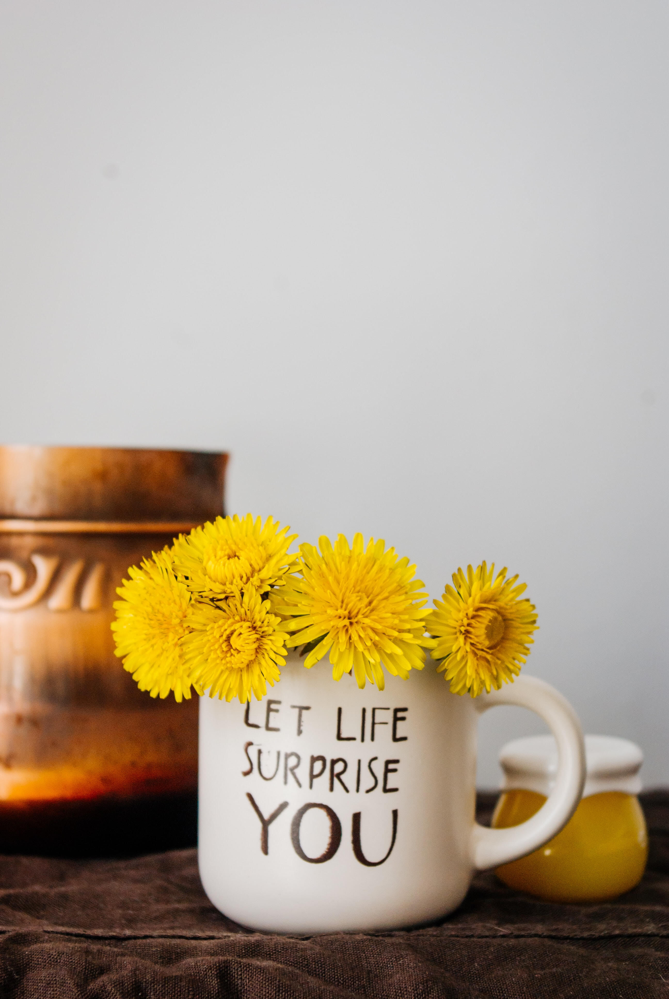

Namaskara 🙏
Step outside, in a place that has greens…what do you see?
What I see from where I'm at now…every plant 🏵🌳 is similar in so many ways…they are after all, of one family. The difference is the feel, texture, vibe…
And so are we people…similar
It's just that we don't understand deeply that we are, after all, rooted together.
The difference is the ways and vibe…otherwise every one of us is trying to do our best…in an individual way.📌
Music as we all do feel is therapeutic, but in reality, in medicine, it is actually used as a therapy.
When you think about it, where is the place to judge and in the first place who are we to judge? 👀
Well enough gyaan already
Time to chillax
But gyaan is chill as it leads us in the right away to live life - in a free way. ☁
Free is not about time…free is about your mindset.
And mindset changes by having experiences…not ones you usually enjoy but different from your regular doings. 💡

And, one more thing, ‘There’s a fire in everyone’s heart. Please, do not be the one with the extinguisher.’ 🔥
Love,
Walkover